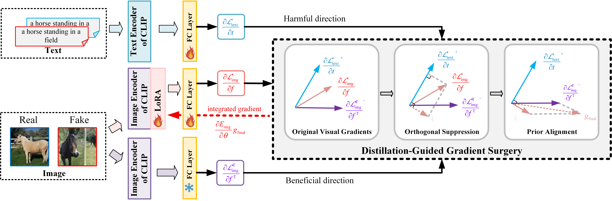
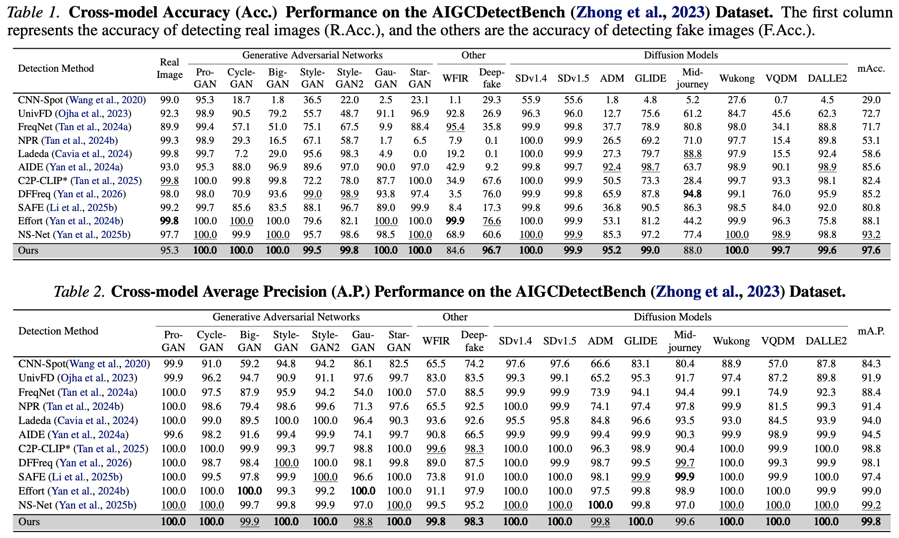
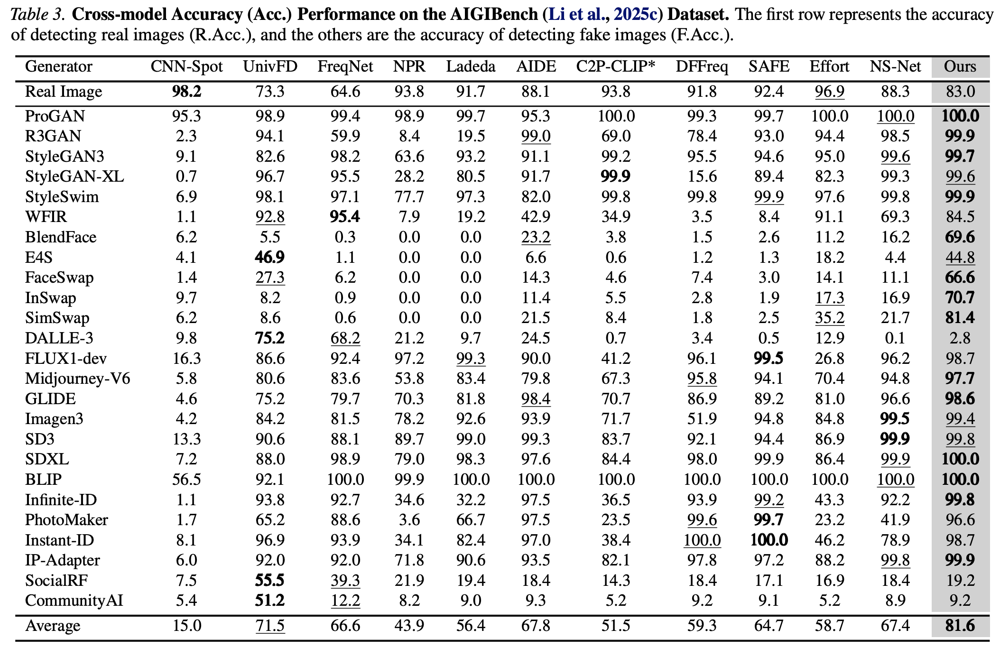

Abstract
Key Contributions
Method Overview

I — Orthogonal Suppression. The image gradients of the training network are orthogonally projected onto the subspace complementary to the harmful directions inferred from text gradients, thereby mitigating cross-modal interference.
II — Prior Alignment. The coordinate-wise negative components of the frozen CLIP image gradients are introduced as lightweight alignment signals to reinforce beneficial pre-trained priors.
Quantitative Results


Overall, quantitative results confirm the effectiveness of our DGS-Net framework, which reserves transferable pre-trained priors while suppresses task-irrelevant knowledge, thereby improving both detection accuracy and cross-domain generalization.
BibTeX
@article{yan2025dgs,
title={DGS-Net: Distillation-Guided Gradient Surgery for CLIP Fine-Tuning in AI-Generated Image Detection},
author={Yan, Jiazhen and Li, Ziqiang and Wang, Fan and Wang, Boyu and He, Ziwen and Fu, Zhangjie},
journal={arXiv preprint arXiv:2511.13108},
year={2025}
}